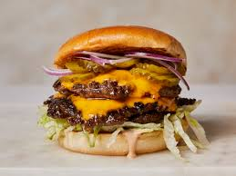

The Best Burger

Once a classic, always a classic!
We can't go more classic than with a beautiful and delicious Cheeseburger with beef.Let's get it done!
Ingridients
- 150 g of grass fed beef
- Brioche Buns
- Cheddar cheese
- Rucola Salat
- Red Onion
- Pickles
- Jalapenos
- Aioli
- Pepper, Salt and Cayenne pepper
Steps
- Heat up the pan. Put only a little piece of butter in the pan till it melts
- Spice your meat with pepper, salt und cayenne pepper and form a patty with it
- Put the patty in the pan till the downside has a dark brown color. Than switch sides
- When both sides look done you put the meat in a heated oven and put the cheese on top. 80 Degrees Celsius is enough
- Now lower the heat of your pan. Put in the chopped onion so that they can suck up all the flavor and taste of the meat an butter
- Take your buns and smear them with the aioli. And put Rucola on the bun
- Put the beef with cheese on your bun and add the jalapenos on top
- The burger is finished now you can finish it. Enjoy